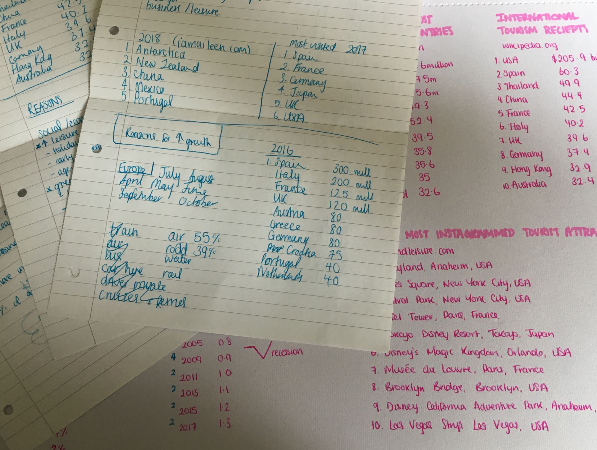

Travelling Population
An illustrative infographic to provide you with all the information and statistics you could possibly want to know about the topic of travel.
Research Notes




An illustrative infographic to provide you with all the information and statistics you could possibly want to know about the topic of travel.
Research Notes